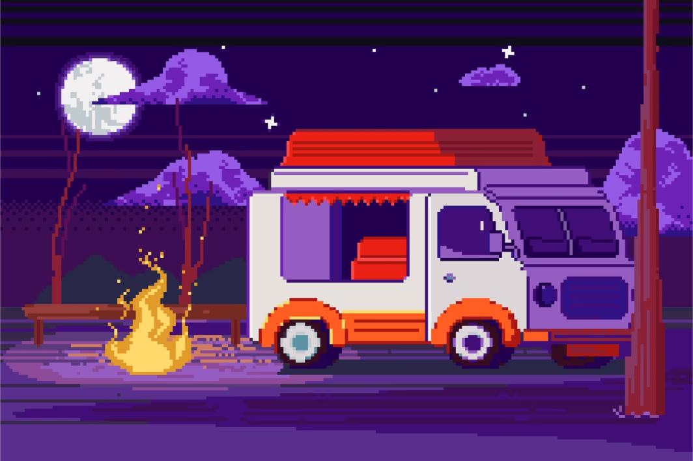

Фритрек и нулевой спринт: Пора браться за ум

Это было самое начало пути. На этом этапе важно было проникнуться основами и настроиться на учёбу. И, возможно, подумать, как новые знания могут повлиять на ваше будущее.
В начале 2024 года я наконец понял, что вот уже 2 года просто валяю дурака и ничем не занимаюсь. В голову пришло пару мыслей по поводу того, чем бы мне заняться. Перевес между какой-то работой (которая не даст никакого развития) и курсами по программированию был существенным и я выбрал второе, так как, связывая работу с IT, ты никогда не останешься безработным (ну, по крайней мере, я так считаю).